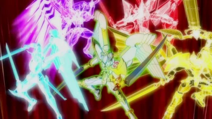
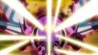
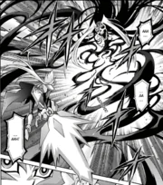
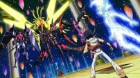

ZEXAL II 141
Director/Productor:
Satoshi Kurawa
Nombre del capitulo:
Ingles: The Fate of Three Worlds (la esperanza de los tres mundos).
Japones: 混沌終焉 必殺のファイナル・ホープ剣・スラッシュ！! (¡Final del caos! ¡El corte final de la espada de la esperanza!).
Resumen del epeisodio:
Tras derrotar a Don Thousand y tras un breve momento de confsion Kamishiro Ryōga decide enfrentarse a Tsukumo Yūma para poder juntar los mountruos “Number” y usarlos para destruir el mundo de astral debido a que están en guerra con el mundo variant.
Contraparte del manga:
Este episodio tiene como contraparte el tomo 51 del manga de Zexal incluyendo un villano principal diferente conocido como E´Rah y un sub-villano llamado Kyoji Yagumo.
Opiniones personales:
Este episodio pese a diferir mucho de lo ideal me parece que tanto por visuales como por el duelo en si, concidero que es buena idea mostrar contenido del mismo ya que muy pocos le dan una oportunidad a Zexal hasta este punto debido a su comienzo mas infantil.
